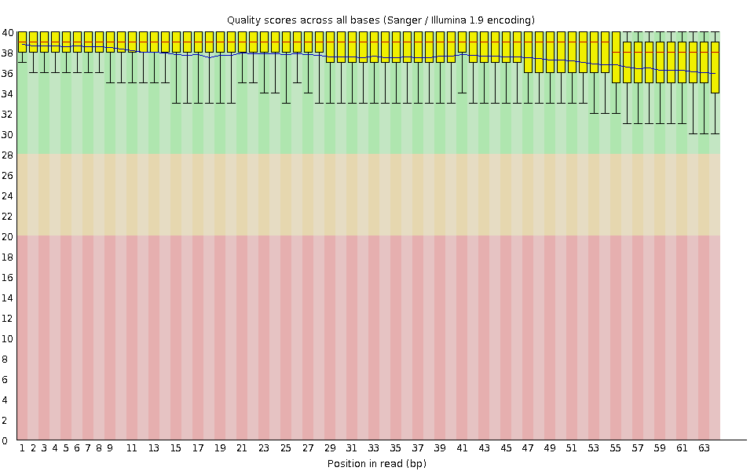
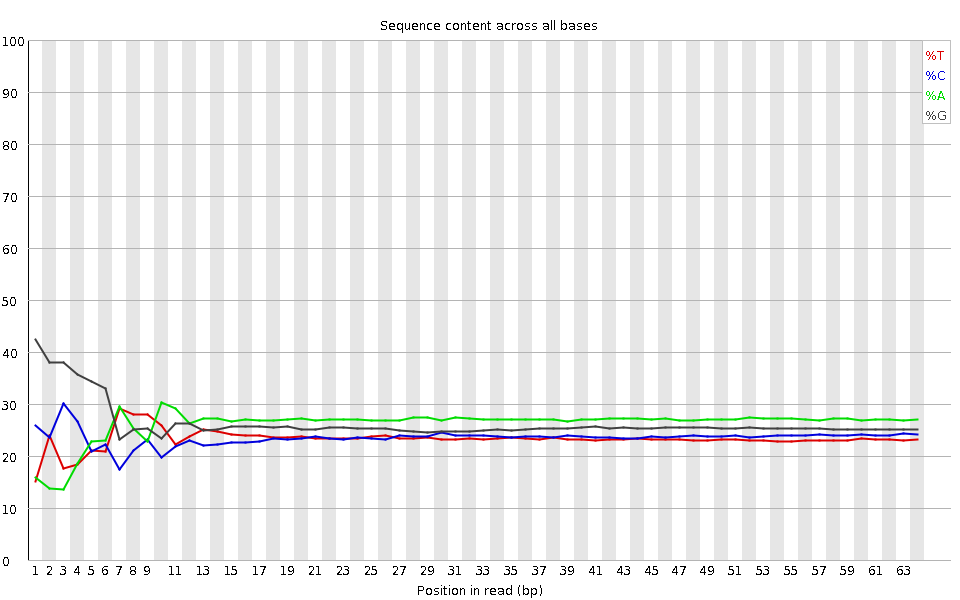
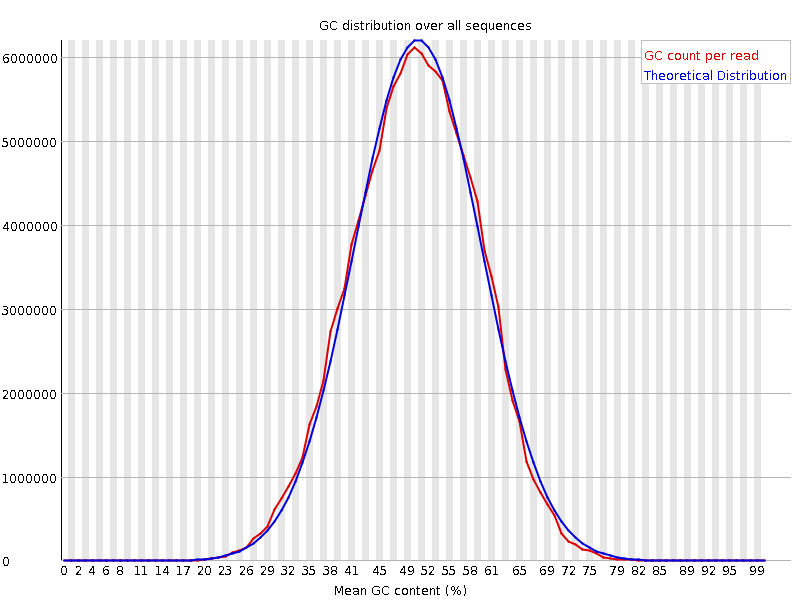
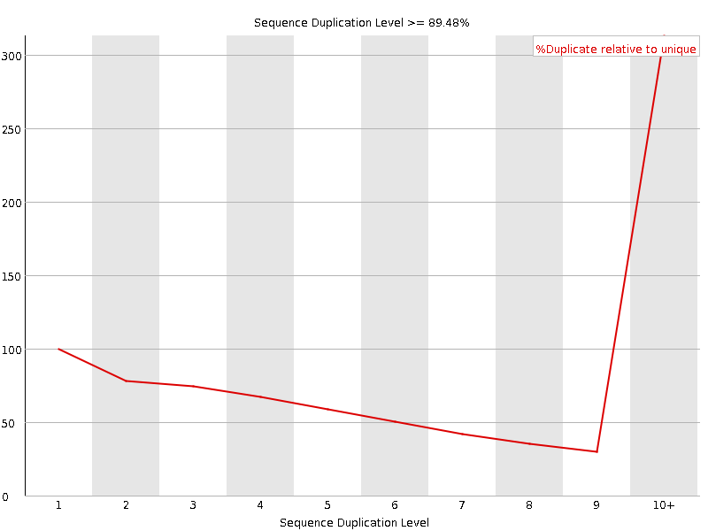

![[OK]](Icons/tick.png) Basic Statistics
Basic Statistics
| Measure | Value |
|---|---|
| Filename | SRR317066_pe_1.f.fastq |
| File type | Conventional base calls |
| Encoding | Sanger / Illumina 1.9 |
| Total Sequences | 90071207 |
| Filtered Sequences | 0 |
| Sequence length | 64 |
| %GC | 50 |
Per base sequence quality

Per sequence quality scores

![[FAIL]](Icons/error.png) Per base sequence content
Per base sequence content

Per base GC content

Per sequence GC content

Per base N content

Sequence Length Distribution

Sequence Duplication Levels

Overrepresented sequences
No overrepresented sequences
![[WARN]](Icons/warning.png) Kmer Content
Kmer Content

| Sequence | Count | Obs/Exp Overall | Obs/Exp Max | Max Obs/Exp Position |
|---|---|---|---|---|
| CTGGG | 11680825 | 2.0960999 | 7.4516463 | 1 |
| GGCTG | 11655595 | 2.0915723 | 6.9009748 | 1 |
| GGAGG | 14069850 | 2.0064802 | 6.1646233 | 2 |
| GGCAG | 12264130 | 1.9555966 | 5.9936385 | 2 |
| GCTGG | 10802655 | 1.938514 | 6.5089526 | 1 |
| GGGAG | 12281270 | 1.7514135 | 6.8891454 | 2 |
| GGCCA | 9390025 | 1.6741959 | 5.294403 | 1 |
| GGGCA | 10206825 | 1.6275456 | 6.0247803 | 1 |
| TGGGG | 9488925 | 1.5228543 | 6.8277655 | 1 |
| GTGGG | 9244595 | 1.4836423 | 9.480529 | 1 |
| GGGGA | 10099870 | 1.4403273 | 7.66967 | 1 |
| GGGTG | 8799680 | 1.4122392 | 5.8423085 | 2 |
| GTGGT | 7765650 | 1.4074378 | 5.474738 | 1 |
| GGGCT | 7263610 | 1.3034397 | 5.2584877 | 3 |
| GGGGT | 7899875 | 1.2678316 | 6.8182807 | 1 |
| GGGGG | 8630515 | 1.2265011 | 8.686819 | 1 |
| GGGGC | 6632125 | 1.0538553 | 5.521815 | 2 |
| CGGGG | 4287945 | 0.6813614 | 6.0862813 | 1 |